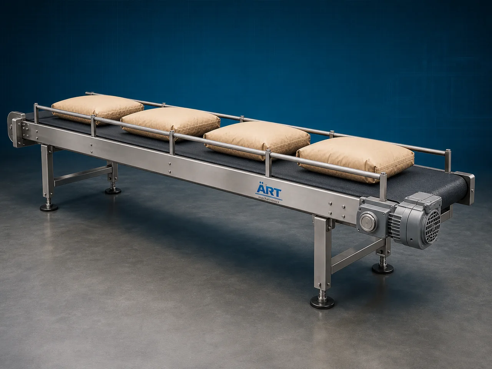

Sack Conveyor Machine (Industrial Bag, Sack & Package Handling Conveyor System)
A Sack Conveyor Machine, also known as a Bag Conveyor System or Industrial Sack Handling Conveyor, is a specialized industrial material handling equipment designed for transporting sacks, bags, cartons, pouches, packaged products, and heavy loaded materials efficiently between different processing, packaging, storage, loading, and dispatch areas.

About the Sack Conveyor
Sack conveyor systems are widely used for:
- Bag transportation
- Packaging line automation
- Loading and unloading operations
- Warehouse material handling
- Dispatch line movement
- Production line integration
The machine improves:
- Production efficiency
- Material handling speed
- Labor reduction
- Workplace safety
- Process automation
- Heavy load handling capability
Sack conveyor machines are widely used in industries such as:
Food processing industries
Flour mills
Cement industries
Fertilizer industries
Packaging industries
Warehousing & logistics
Grain processing plants
Chemical industries
Manufacturing plants
where continuous transportation of filled sacks and packaged products is essential.
The machine operates using:
- Motor-driven conveyor belts
- Roller systems
- Heavy-duty conveyor frames
- Inclined or horizontal transfer arrangements
to move sacks and bags smoothly and continuously.
Sack conveyor machines are highly suitable for:
- Sack handling
- Bag transportation
- Carton conveying
- Warehouse automation
- Loading and unloading systems
- Packaging line transfer
ART Mechatronics offers high-performance sack conveyor machines, engineered for heavy-duty industrial operation, continuous material handling, reliable performance, and long service life.
Working Principle of Sack Conveyor Machine
Filled sacks, bags, cartons, or packaged products are placed on conveyor system
Electric motor drives conveyor belt or roller system
Conveyor moves products continuously along conveyor path
Machine transports:
- Cement bags
- Flour sacks
- Fertilizer bags
- Grain sacks
- Food packets
- Cartons and boxes smoothly between industrial process points.
Conveyor can operate: Horizontally Inclined upward Inclined downward depending on plant layout.
Conveyor integrates with: Packaging machines Bagging systems Loading stations Warehouses Dispatch lines
Sacks and packages discharged automatically at required destination point
Types of Sack Conveyor Machines
- 1. Flat Sack Conveyor
Used for: ✔ Horizontal sack transportation
- 2. Inclined Sack Conveyor
Suitable for: ✔ Elevated loading and unloading applications
- 3. Roller Sack Conveyor
Uses: ✔ Roller-based movement system for cartons and bag handling.
- 4. Mobile Sack Conveyor
Designed for: ✔ Flexible loading and unloading operations
- 5. Heavy Duty Bag Conveyor
Suitable for:
- Cement
- Fertilizer
- Heavy industrial bags
- 6. Food Grade Sack Conveyor
Designed for: ✔ Hygienic food and agro industries
Industries Using Sack Conveyor Machine
🌾 Flour Mill Industry Flour sack handling systems 🏗️ Cement Industry Cement bag conveying and loading 🌱 Fertilizer Industry Fertilizer sack transportation systems 📦 Packaging Industry Package and carton handling systems 🍃 Food Processing Industry Food bag handling and transfer systems 🚚 Warehousing & Logistics Warehouse automation and dispatch operations ⚗️ Chemical Industry Chemical bag handling applications 🌾 Grain Processing Industry Grain sack transportation systems
Features & Advantages
- Efficient sack and bag transportation
- Heavy-duty industrial construction
- Reduces manual labor and lifting effort
- Continuous industrial operation
- Improves loading and unloading efficiency
- Horizontal and inclined conveying options
- Easy integration with packaging lines
- Low maintenance requirement
- Energy-efficient material handling solution
Technical Highlights
Conveyor Type: Belt conveyor Roller conveyor Inclined conveyor Construction: Stainless Steel / Mild Steel Belt Material: PVC Rubber Heavy-duty industrial belts Drive System: Geared motor drive Variable frequency drive (VFD) Conveyor Arrangement: Fixed type Mobile type Automation: Semi-automatic Fully automatic PLC-based systems
Turnkey Sack Handling Solutions
ART Mechatronics offers: Complete sack conveying systems Packaging line integration Warehouse automation systems Loading and unloading conveyor solutions Installation & commissioning After-sales service & AMC
Why Choose Art Mechatronics
Expertise in industrial material handling systems Customized conveyor solutions for multiple industries High-performance and durable industrial construction Energy-efficient and reliable conveying systems Proven industrial performance across sectors
Applications
Flour Mills Cement Plants Fertilizer Industries Food Processing Plants Packaging Facilities Warehousing & Logistics Centers
Industries that use the Sack Conveyor
Related Conveying & Handling machines
Get pricing & specs for the Sack Conveyor
Share the product, target capacity, current process and plant location. These details help our engineers discuss the right machine or line configuration.
One partner, from design to start-up
ART Mechatronics designs, manufactures, installs and commissions your Sack Conveyor solution with regional presence in India, UAE and Thailand.